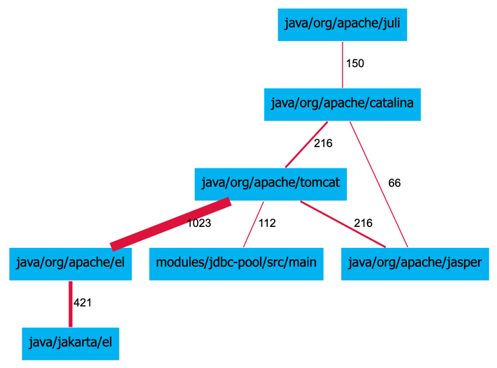
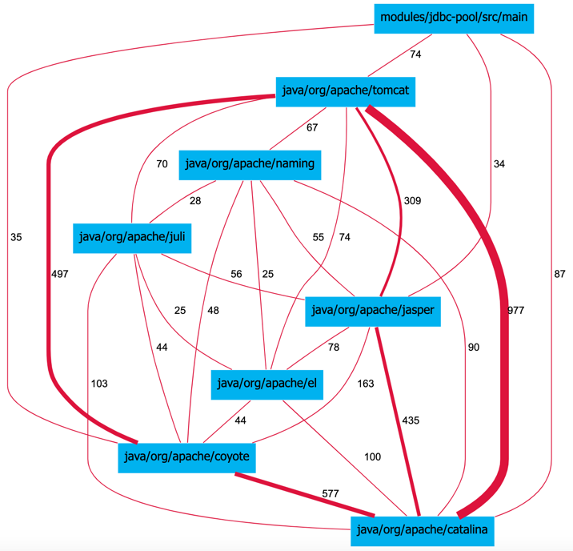

Finding Dependencies through Duplication and Change History
In the previous section, we discussed a typical way to find dependencies among source code components. There, developers, through import or include statements, explicitly declare that some file depends on some other piece of code. To find dependencies, we then need to locate these statements and process them to identify a referenced component.
In this section, we look at two additional ways to find implicitly find dependencies among components. Both of these dependency approaches build on a more general view of dependencies or coupling in code. Martin Fowler noted that while there are many definitions of coupling, they all boil down to one thing: if you need to change one piece of code, you may need to change another piece of code. Fowler suggested that duplication is coupling because if you change one part of duplicated code, you usually need to change another copied piece of code.
Building on Martin Fowler’s more general view on coupling, Sokrates introduces two additional dependency measurements, dependency based on duplication between files and dependencies based on the history of file changes.
Duplication Dependencies
The analysis of dependencies based on duplication looks at all duplicated pieces of code and counts how lines of code duplicated between the components, ignoring duplicates within the components. This dependency analysis is a part of the Sokrates’ duplication analyses. Sokrates displays duplication dependency as a link between components with the number of duplicated lines as a label. Sokrates also provides a detailed log of all duplicates if you want to know the details. When performing analysis, you can also define a threshold for deep heathen dependencies, so that Sokrates displays links between components only if the number of duplicated lines between components is above this threshold.

Figure 1: A fragment of a Sokrates duplication report visualizing duplicates between components as dependencies. The number on the links represents the number of duplicated lines.
File Change History Dependencies
Dependency analysis based on the files’ change history looks at all the files changed the same day. This dependency analysis is a part of the Sokrates’ file change history analyses. Sokrates then creates dependency as a link with a label showing the number of days in with simultaneous changes of files from two components. You can define a threshold of the minimal number of days, to filter small ad-hoc simultaneous changes of files. Sokrates considers two components connected if the number of days in which files have been simultaneously changed equals on is greater than the threshold. Dependency analysis based on file change history provides circumstantial evidence of potential coupling. It complements another two types of dependency analysis, which statically detected dependency, in the form of import statements or duplicated code.

Figure 2: A fragment of a Sokrates file history report visualizing days of change as dependencies. The number on the links represents the days on which files from two components have been changed simultaneously.